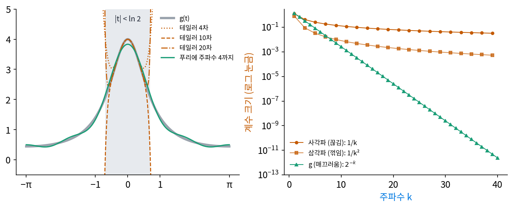

테일러와 푸리에: 한 점 근처와 한 주기 전체
사각파는 주파수 101까지 더해도 제곱 오차 평균의 제곱근(RMS)이 0.063 남았고, 삼각파는 항 25개로 부분합과 삼각파의 가장 큰 차이가 0.008이었다. 끊긴 곳과 꺾인 곳의 차이가 계수의 크기에서 이미 보였다. 사각파의 계수는 4/(πk), 삼각파는 8/(π²k²)이다. 그렇다면 끊긴 곳도 꺾인 곳도 없이 어디서나 매끄러운 함수는 계수가 얼마나 빨리 줄까? 그리고 매끄러운 함수라면 한 점에서 미분을 모두 모아 다항식으로 펼치는 테일러 전개도 있다. 둘 가운데 무엇으로 한 주기 전체를 적는 것이 나을까?
매끄러운 g(t) = 1/(5/4 − cos t)
어디서나 매끄럽고 주기가 2π인 함수 g(t) = 1/(5/4 − cos t)를 골랐다. 분모가 1/4에서 9/4 사이라 0이 되는 일이 없고, 몇 번을 미분해도 끊기거나 꺾이는 데가 없다. t = 0에서 4로 가장 높고 t = ±π에서 4/9 = 0.444로 가장 낮은, 봉우리 하나짜리 물결이다. 이 함수를 고른 까닭은 계수를 손으로 쓸 수 있기 때문이다. 내적으로 구하면 평균 a₀/2 = 4/3이고, aₖ는 4/3, 2/3, 1/3, 1/6, …으로 주파수가 하나 오를 때마다 정확히 절반이 된다. 사인 계수는 모두 0이다.
세 함수의 계수를 비교하면 아래와 같다.
| 주파수 k | 1 | 5 | 9 | 15 | 21 | 31 |
|---|---|---|---|---|---|---|
| 사각파 (끊김) | 1.27 | 0.255 | 0.141 | 0.0849 | 0.0606 | 0.0411 |
| 삼각파 (꺾임) | 0.811 | 0.0324 | 0.0100 | 0.0036 | 0.0018 | 0.00084 |
| g (매끄러움) | 1.33 | 0.0833 | 0.0052 | 8.1 × 10⁻⁵ | 1.3 × 10⁻⁶ | 1.2 × 10⁻⁹ |
사각파는 1/k, 삼각파는 1/k²로 거듭제곱처럼 준다. g는 주파수가 하나 오를 때마다 반이 되어, 주파수 31에서 사각파보다 3천만 배 작다. 주파수 K까지 더했을 때 한 주기 전체에서 부분합과 g의 가장 큰 차이는 g가 K = 9에서 0.0052, 15에서 8.1 × 10⁻⁵, 25에서 8.0 × 10⁻⁸이다. 숫자 열여섯 개(평균 하나와 코사인 계수 열다섯)로 한 주기 전체를 1만분의 1 안쪽으로 맞춘다.
이번에는 같은 g를 t = 0 둘레로 테일러 전개해 보자. 짝수 차수만 남아 4 − 8t² + 16.67t⁴ − 34.69t⁶ + …이다. 차수를 올리면서 몇 점에서 테일러 다항식과 참 값의 차이를 재면 아래와 같다.
| 테일러 차수 | t = 0.3 | t = 0.6 | t = 1.0 | t = π |
|---|---|---|---|---|
| 2 | −0.114 | −1.23 | −5.41 | −75.4 |
| 4 | 0.021 | 0.93 | 11.3 | 1,548 |
| 10 | −1.4 × 10⁻⁴ | −0.39 | −102 | −1.3 × 10⁷ |
| 20 | 3.2 × 10⁻⁸ | 0.092 | 3,965 | 4.9 × 10¹³ |
| 40 | 3.1 × 10⁻¹⁵ | 0.0051 | 6.0 × 10⁶ | 6.6 × 10²⁶ |
t = 0.3에서는 차수를 올릴수록 빠르게 맞아 들어간다. t = 0.6에서는 느리게나마 다가간다. 그런데 t = 1에서는 차수를 올릴수록 더 크게 빗나가고, t = π에서는 40차에서 10²⁶이 넘는다. 같은 자리에서 푸리에 부분합은 주파수 10까지로 네 점 모두 0.0022 안쪽, 20까지로 2.3 × 10⁻⁶ 안쪽이다.

테일러 전개가 맞아 들어가는 범위는 |t| < 0.693이다. 이 경계는 실수 위에서는 보이지 않는다. g는 실수 t 어디에서도 끊기지 않지만, t를 복소수로 넓히면 cos t = 5/4가 되는 자리 t = ±0.693i(0.693 = ln 2)에서 분모가 0이 된다. 테일러 전개는 한 점에서 잰 미분만 쓰므로, 그 점에서 가장 가까운 깨지는 자리까지의 거리(수렴 반경)를 넘으면 쓸 수 없다. 푸리에 급수는 한 주기 전체와의 내적으로 계수를 구하므로 주기 전체를 고르게 맞춘다. 깨지는 자리가 실수 축에서 0.693만큼 떨어져 있다는 사실은 푸리에 쪽에서는 주파수가 하나 오를 때 계수가 줄어드는 비율로 나타난다. 이웃 계수의 비 1/2이 e−0.693이다.
정리하면 세 함수의 계수는 이렇게 준다.
끊긴 곳이 있으면 1/k, 값은 이어지고 기울기가 꺾이면 1/k², 어디서나 매끄러우면 거듭제곱보다 빠르게 e−ρk로 준다. 테일러 전개는 한 점 근처를 그 점의 미분만으로 아주 잘 맞추고, 푸리에 급수는 한 주기 전체를 내적으로 고르게 맞춘다. 매끄러운 주기 함수 하나를 적는 데 필요한 숫자의 개수는 함수가 얼마나 매끄러운지가 정한다.
ML에서: 신경망이 그리는 함수의 매끄러움
신경망 하나도 입력을 받아 값을 내는 함수다. 입력을 (cos t, sin t)로 주면 신경망의 출력은 주기 2π인 함수가 되고, 그 계수가 얼마나 빨리 주는지 잴 수 있다. 활성화 함수가 ReLU 이면 신경망은 꺾은선을 이어 붙인 함수를 그리고, tanh 이면 어디서나 매끄러운 함수를 그린다. 둘의 계수가 실제로 얼마나 다르게 주는지는 아래 문제 12에서 숫자로 본다.
문제 10. 아침 6시의 기온으로 저녁을 맞히기
어느 날 기온이 T(h) = 15 − 5 cos(2π(h − 3)/24) °C 를 따른다고 하자(h 는 시각, 직접 만든 모델). 아침 6 시에 기온 11.46 °C, 기온의 시간당 변화율 0.926 °C/시, 굽음 0.242 를 쟀다. (가) 6 시의 기온과 시간당 변화율만으로(직선으로) 8 시, 12 시, 18 시 기온을 어림하라. (나) 굽음까지 넣으면? (다) 하루 평균 15 °C 와 하루 주기 물결 하나를 알면?

(가)는 11.46 + 0.926 × 2 = 13.32도, 12시는 17.02도, 18시는 22.57도요. 참 값은 13.71, 18.54, 18.54도예요. 18시가 4도 틀려요. (나)로 굽음을 넣으면 좋아지겠죠. 8시 13.80도, 12시 21.38도, 18시는… 40.02도요?

차수를 하나 올렸는데 18시가 더 틀렸어요. 6시에서 잰 굽음 0.242는 언제의 굽음이죠?

6시의 굽음이에요. 그런데 오후에는 기온 곡선이 반대로 휘어요. 6시에 위로 휘던 것을 열두 시간 뒤까지 그대로 밀고 간 거예요.

차수를 더 올리면 언젠가 맞긴 해. 6시 둘레로 10차까지 펼치면 18시가 18.566도, 20차면 18.536도야. 그런데 다음 날 6시(h = 30)를 넣으면 10차는 76.3도, 20차에서야 11.460도가 나와.

(다)는요?

평균 15도와 물결 하나의 크기·출발 자리만 알면 어느 시각이든 정확해요. 숫자 셋이에요. 테일러는 6시라는 한 점에서 잰 정보를 멀리 밀고 가니까 멀수록 많이 필요하고, 하루 주기 물결은 처음부터 하루 전체를 보고 정한 축이라서 몇 개만으로 하루 전체가 맞아요.

첫 주 출석률과 한 주에 늘어나는 폭만으로 기말 출석을 예측하면 엉망인데, 작년 학기 전체 패턴을 알면 잘 맞잖아요. 첫 주 숫자 둘이 테일러 전개고, 한 학기 패턴이 푸리에 급수예요.
문제 11. 몇 개면 충분한가
(가) g(t) = 1/(5/4 − cos t) 의 푸리에 부분합이 한 주기 전체에서 0.001 안쪽으로 맞으려면 주파수 몇까지 더해야 하는가? (나) 사각파의 부분합의 제곱 오차 평균의 제곱근(RMS)이 0.1 아래, 0.01 아래가 되려면 주파수 몇까지 더해야 하는가? (다) g 를 t = 0 둘레 테일러 다항식으로 t = π 까지 맞출 수 있는가? (위젯 4의 「문제 11 불러오기」로 확인해 보자.)
(가)는 위젯에서 K를 올려 보면 돼요. 12에서 부분합과 g의 가장 큰 차이가 6.51 × 10⁻⁴이라 0.001 아래예요. 11이면 위고요.
손으로도 돼. 버린 계수가 (8/3)·2^(−13), 2^(−14), …이고, 차이가 가장 큰 t = 0에서는 cos가 다 1이라 버린 것을 다 더한 (8/3)·2^(−12) = 6.51 × 10⁻⁴이야. 위젯 값과 같아.
(나)는 사각파 계수가 4/(πk)니까 비슷하게 20개쯤이면 되겠죠.
축마다 세기가 따로 더해진다는 것으로 남은 세기를 세어 볼래요? 사각파의 제곱 평균은 1이고, 주파수 k 하나가 bₖ²/2를 담았어요.

남은 세기가 0.1² = 0.01 아래가 되려면 주파수 41까지, 0.01² = 0.0001 아래가 되려면… 4053까지예요. 오차를 열 배 줄이는 데 항이 백 배 들어요.

계수가 1/k 꼴이면 그 제곱은 1/k²이고, K 뒤의 1/k²을 다 더하면 대략 1/K이라서 그래. RMS는 그 제곱근이니 1/√K로 줄고. g는 버린 계수의 합이 2^(−K)로 줄어서 하나 더할 때마다 반이 되고.

(다)는요?

못 맞춰요. 위젯에서 테일러 차수를 24로 올리면 t = π에서 참 값과의 차이가 2.07 × 10¹⁶이에요. 수렴 반경이 0.693이라 그 밖은 차수를 아무리 올려도 안 돼요. 숫자를 몇 개를 쓰든 테일러로는 한 주기를 다 못 덮어요.

복소해석 수업에서 테일러 급수가 가장 가까운 특이점까지의 원 안에서만 수렴한다고 배웠는데, 실수만 보면 아무 문제 없는 함수에도 그 원이 숨어 있었네.
문제 12. ReLU 신경망과 tanh 신경망이 그리는 물결
입력 (cos t, sin t), 폭 64 인 은닉층 두 개, 출력 하나인 신경망을 무작위로 만들었다(가중치는 정규분포에서 뽑고 둘째·셋째 층은 1/8 로 줄였다, 씨앗 0). 활성화만 ReLU 와 tanh 로 바꿔 출력의 계수 크기 |cₖ|(주파수 k 의 코사인·사인 계수를 합친 크기)를 구했더니, ReLU 는 |c₁| = 0.3448, |c₁₀| = 9.80 × 10⁻⁴, |c₃₀| = 2.57 × 10⁻⁴, |c₅₀| = 1.40 × 10⁻⁴, tanh 는 |c₁| = 0.4849, |c₁₀| = 1.01 × 10⁻⁴, |c₃₀| = 1.42 × 10⁻⁹, |c₅₀| = 2.62 × 10⁻¹⁴ 이다. (가) 두 신경망의 계수는 각각 어떤 꼴로 주는가? (나) 계수가 |c₁| 의 1/1000 아래로 내려가 머무는 주파수는 ReLU 가 37, tanh 가 9 다. 그 까닭을 신경망이 그리는 함수의 모양으로 설명하라.
(가)는 로그-로그 눈금에서 직선을 맞춰 봤어요. 주파수 16에서 128 사이에서 ReLU 는 기울기 −2.16, tanh 는 −15.03이에요. 둘 다 거듭제곱으로 주는데 tanh 가 훨씬 가파르네요.
tanh 의 기울기 −15를 「1/k¹⁵로 준다」고 읽어도 될까요? 주파수 범위를 바꿔서 다시 맞춰 보면요?
주파수 4에서 16 사이로 맞추면 −6.21, 8에서 32는 −10.83, 24에서 64는 −22.01이에요. 높은 쪽으로 갈수록 계속 가팔라져요. 직선이 아니라 로그 눈금에서 휘어 내려가요. ReLU 는 16에서 48이 −2.18, 24에서 64가 −2.24로 거의 그대로고요.
거듭제곱이면 로그-로그에서 직선이어야 해. 휘어 내려간다는 건 거듭제곱보다 빠르다는 거고, g처럼 e^(−ρk) 꼴이야. tanh 는 몇 번을 미분해도 매끄러우니까. ReLU 는 기울기 −2.16이니 1/k² 근처, 삼각파 꼴이야.
(나)는요? ReLU 신경망의 출력이 어떻게 생겼을지 생각해 보세요.
ReLU 는 0에서 꺾이는 꺾은선이라, ReLU 를 거친 값을 더하고 다시 ReLU 에 넣어도 꺾은선이에요. 끊긴 데는 없고 꺾인 데만 있으니 삼각파처럼 1/k²으로 줄어요. 그래서 주파수 37까지 가야 1/1000 아래로 내려가요. tanh 는 매끄러워서 9면 충분하고요.

같은 크기의 신경망인데 활성화 하나로 그리는 물결의 높은 주파수 꼬리가 달라지는 거네요. 과제에서 ReLU 로 매끄러운 곡선을 맞추면 확대했을 때 꼭 각진 데가 보이던 게 이거였어요.